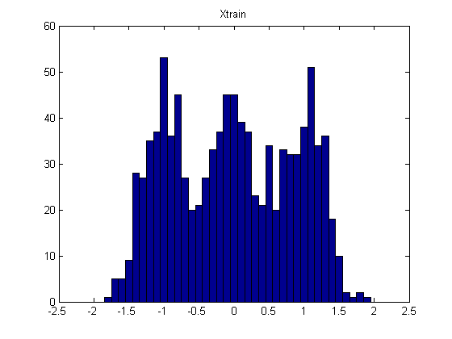
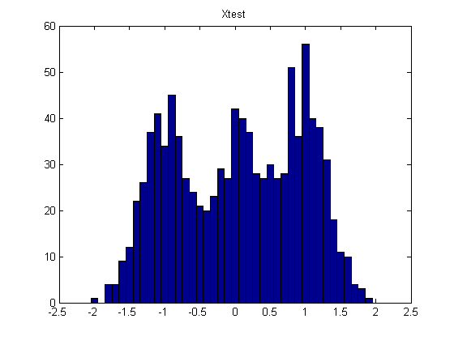
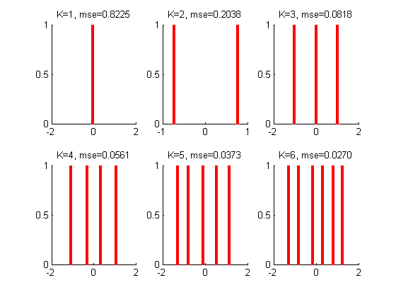
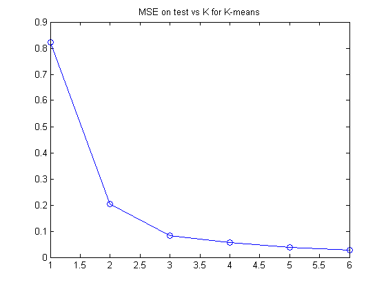
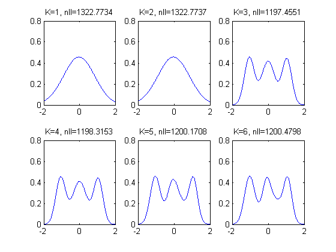
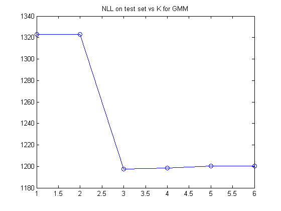
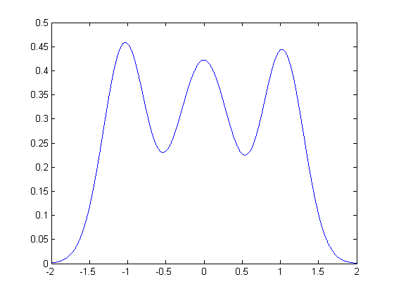

setSeed(0);
mix = gmm(1, 3, 'spherical');
mix.centres = [-1 0 1]';
mix.covars = [0.1 0.1 0.1];
bins = -2:0.1:2;
n = 1000; ndx = 1:n;
Xtrain = gmmsamp(mix, n);
figure;
hist(Xtrain, bins);
title('Xtrain')
printPmtkFigure kmeansModelSelData
Xtest = gmmsamp(mix, n);
figure
hist(Xtest, bins);
title('Xtest')
Ks = [1 2 3 4 5 6];
pemp = normalize(hist(Xtrain, bins));
figure
for i=1:length(Ks)
K = Ks(i);
mu = kmeansFit(Xtrain, K)';
Xhat = kmeansDecode(kmeansEncode(Xtest, mu'), mu');
mse(i) = mean(sum((Xhat - Xtest).^2,2));
subplot(2,3,i);
for k=1:K
h=line([mu(k) mu(k)], [0 1]);
set(h, 'color', 'r', 'linewidth', 3);
hold on
end
title(sprintf('K=%d, mse=%5.4f', K, mse(i)))
end
figure(4);clf
plot(Ks, mse, 'o-');
title('MSE on test vs K for K-means')
finebins = -2:0.001:2;
figure(5);clf
options = foptions;
for i=1:length(Ks)
K = Ks(i);
mix = gmm(1, K, 'spherical');
mix = gmmem(mix, Xtrain, options);
nll(i) = -sum(log(gmmprob(mix, Xtest)))
subplot(2,3,i);
K = Ks(i);
pmodel = gmmprob(mix, finebins(:));
plot(finebins, pmodel, '-');
title(sprintf('K=%d, nll=%5.4f', K, nll(i)))
end
figure;
plot(Ks, nll, 'o-')
title('NLL on test set vs K for GMM')
finebins = -2:0.001:2;
figure
K = 3;
mix = gmm(1, K, 'spherical');
mix = gmmem(mix, Xtrain, options);
pmodel = gmmprob(mix, finebins(:));
plot(finebins, pmodel, '-');
printPmtkFigure kmeansModelSelGMM3
nll =
1.3228e+003
nll =
1.0e+003 *
1.3228 1.3228
Maximum number of iterations has been exceeded
nll =
1.0e+003 *
1.3228 1.3228 1.1975
Maximum number of iterations has been exceeded
nll =
1.0e+003 *
1.3228 1.3228 1.1975 1.1983
Maximum number of iterations has been exceeded
nll =
1.0e+003 *
1.3228 1.3228 1.1975 1.1983 1.2002
Maximum number of iterations has been exceeded
nll =
1.0e+003 *
Columns 1 through 5
1.3228 1.3228 1.1975 1.1983 1.2002
Column 6
1.2005
Maximum number of iterations has been exceeded
      